← Shaivya Shashwat
Case Study 02
LegalClerk
Enterprise Legal Tech · 2026
LegalClerk
One source of truth from intake call to settlement for personal injury law firms. I designed the full platform, end to end: an AI Clerk answers every call, qualifies leads, and routes them into a pipeline the firm actually works from.
Role, Product Designer
Team, Attack Capital
Scope, End-to-end product
Tools, Figma · Lovable · Claude
Team, Attack Capital
Scope, End-to-end product
Tools, Figma · Lovable · Claude
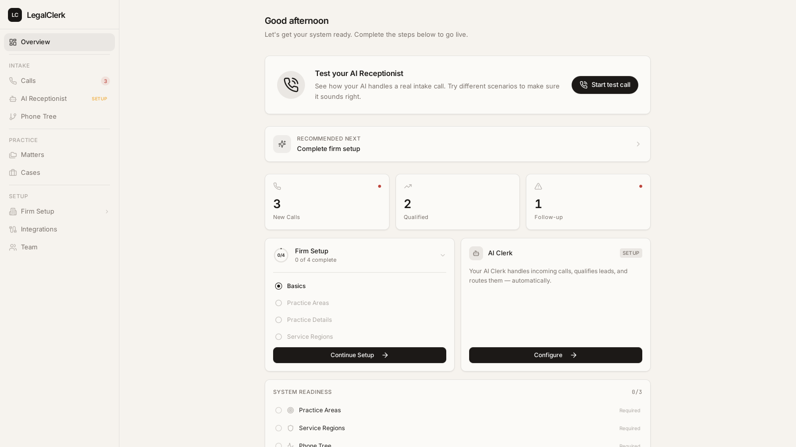
01 / The problem
Injury firms win or lose on the first phone call, and most of them miss it.
Potential clients call after an accident, reach voicemail, and dial the next firm on the list. The ones that do get answered land in sticky notes and spreadsheets, with no consistent qualification, no follow-up discipline, and no connection to the firm's case work. LegalClerk needed to feel trustworthy enough for law firms while automating the most sensitive moment in their funnel.
02 / Intake, triaged
Every call the AI Clerk captures lands in one pipeline.
Calls arrive pre-qualified with a summary, practice area, and urgency. Staff triage in a table or a kanban pipeline, New, Contact Attempted, Contacted, Qualified, so nothing decays in a voicemail box. KPI cards keep unread and follow-up states impossible to ignore.
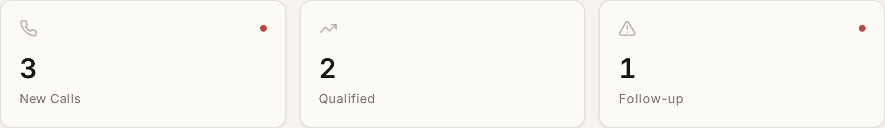


The intake badge routes directly into triage…
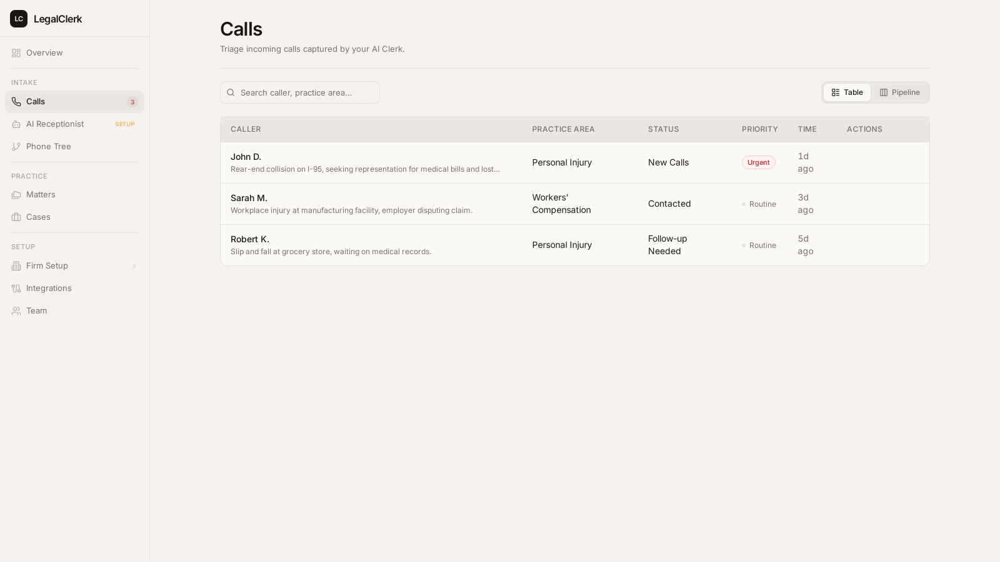
…one click from dashboard to working the leads.
03 / From call to matter
A qualified lead becomes a matter in three steps.
Matters carry files, AI chat, and analysis. The creation flow stays inside a focused dialog, name, client, and an AI matter-context field that primes every later interaction.
Step {{ stepNum }} / 3
{{ stepCaption }}
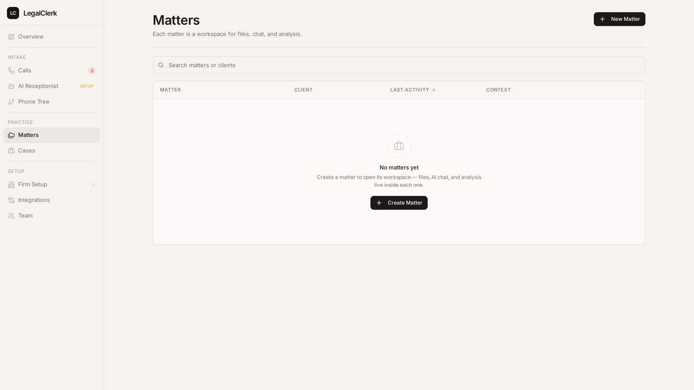
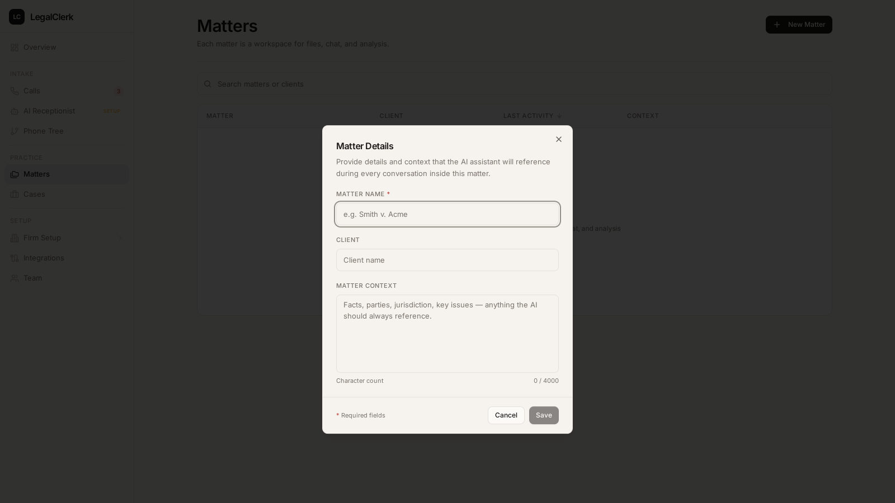
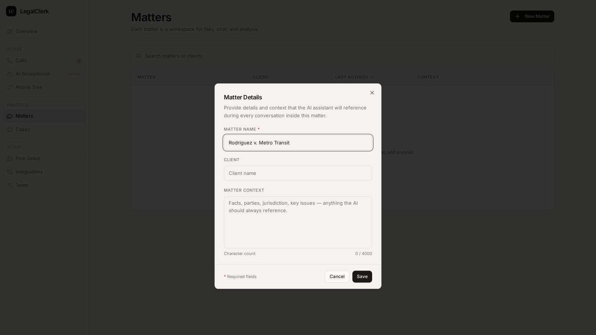
04 / The practice, in one place
Matters, cases, and a role-based team.
Intake only matters if it flows into real work. Matters open into workspaces for files, AI chat, and analysis; cases centralize active litigation; team management maps to how firms actually run, Admin, Attorney, Staff.

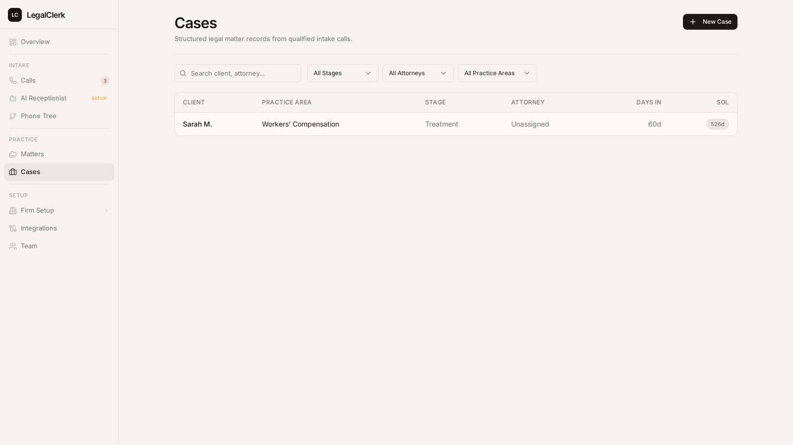
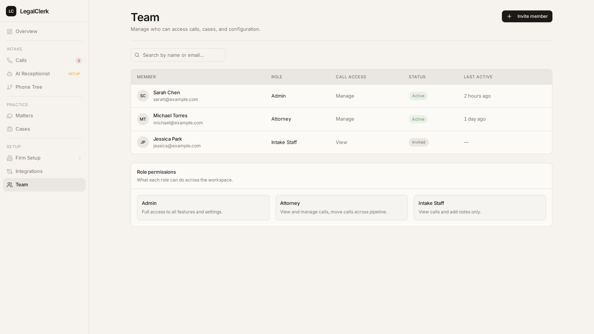
05 / Configuring the AI
Guided setup for a voice that represents the firm.
Firms configure the AI Receptionist's identity and behavior through a guided flow rather than a prompt box, and advanced call routing gets a visual phone-tree builder on a node canvas. Complexity is available, never required: the dashboard's "Start test call" makes trying it the very first action.
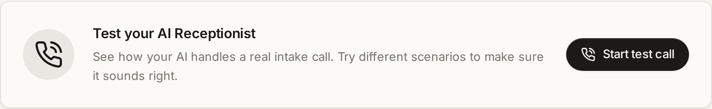
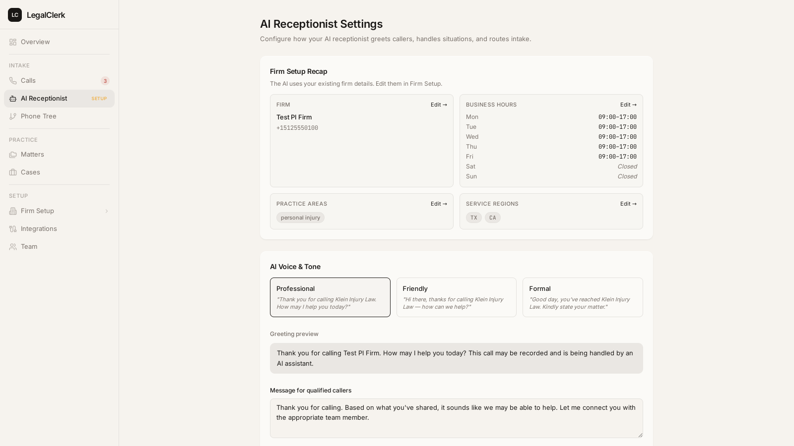
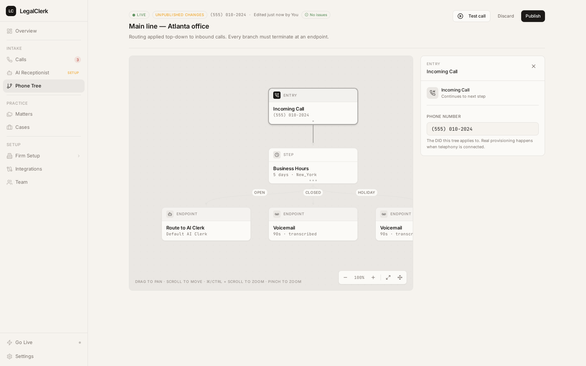
06 / System & craft
Calm surfaces, one near-black primary, keyboard-first.
Legal software earns trust by being quiet. Warm neutral surfaces, a single near-black primary action per view, and grouped navigation with live status badges. Power users get a full shortcut layer, press ? anywhere.
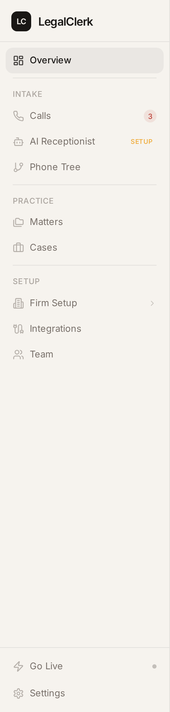
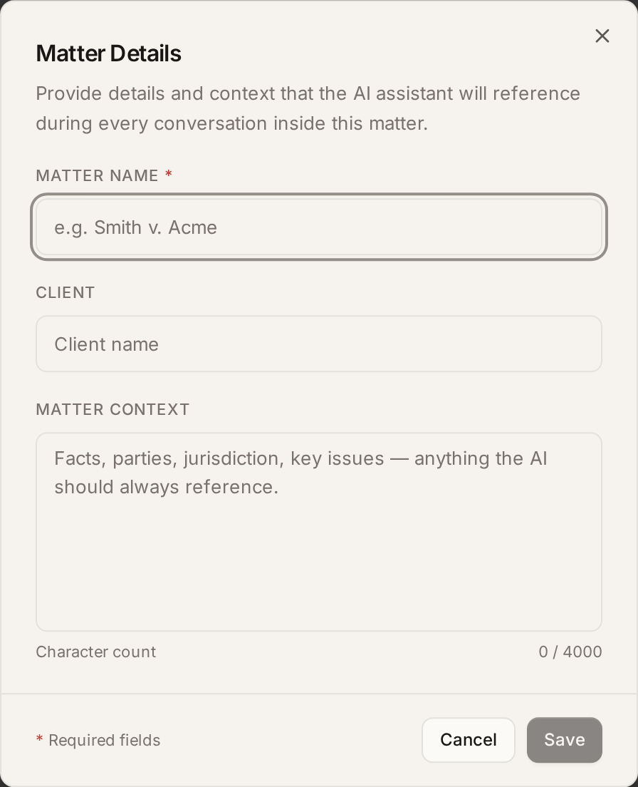
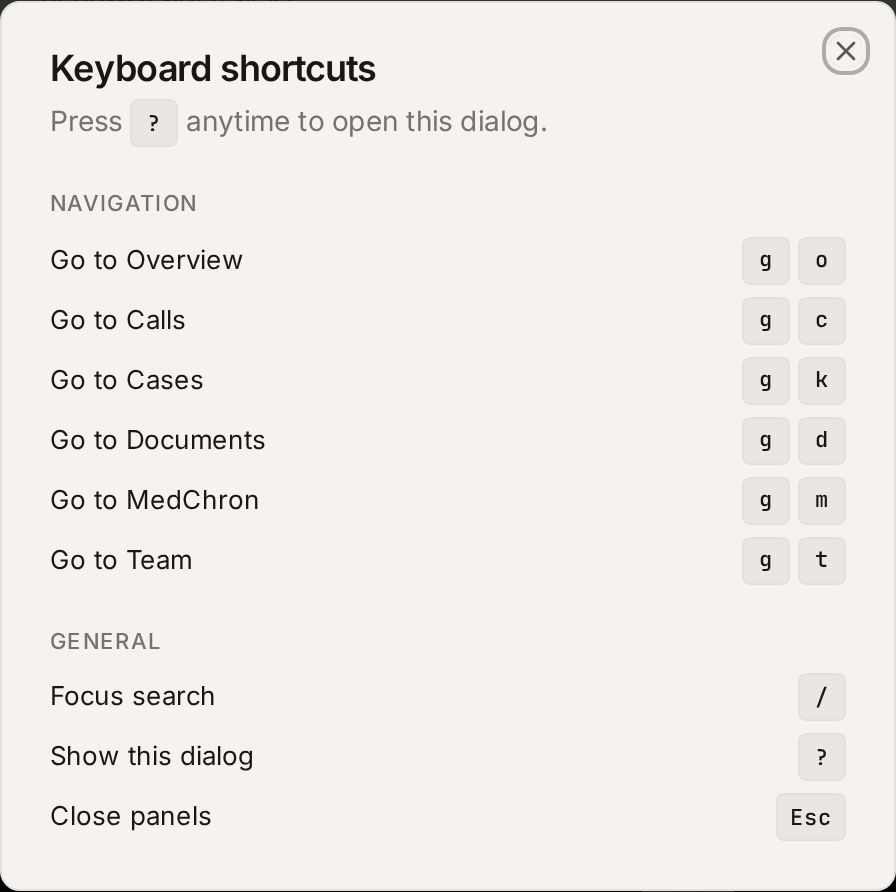